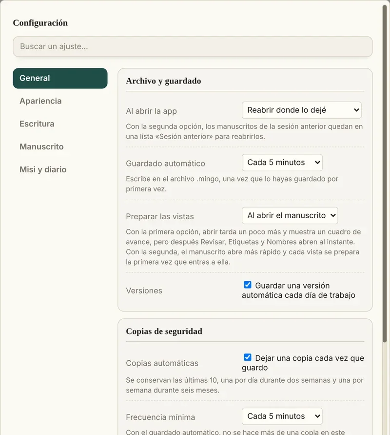
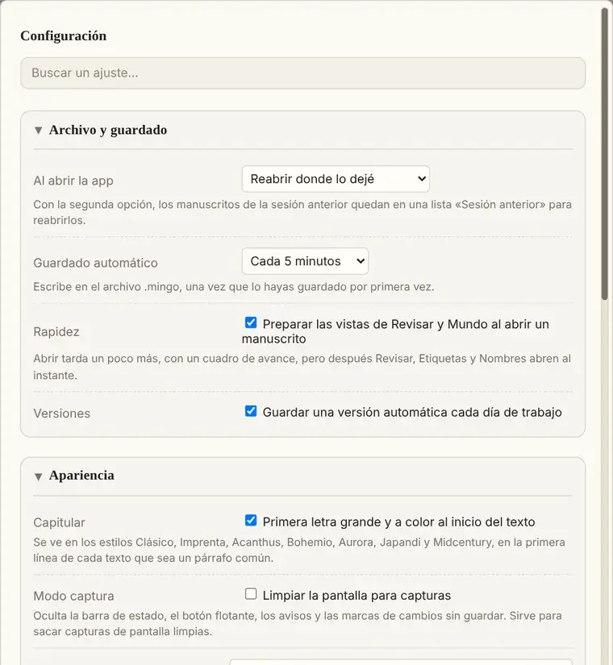
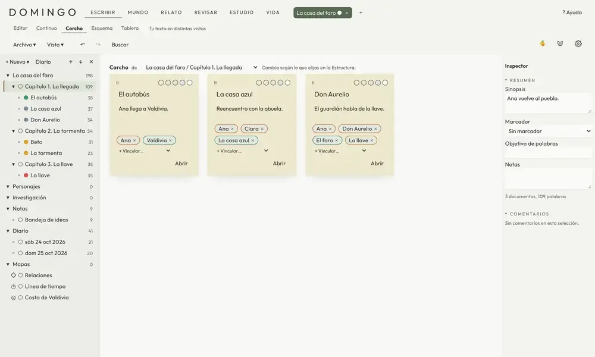
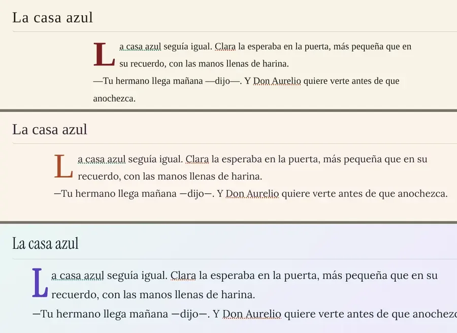
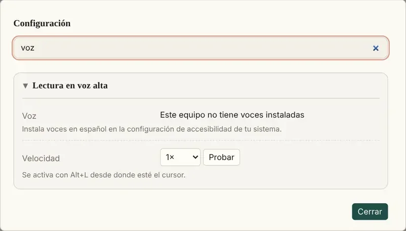
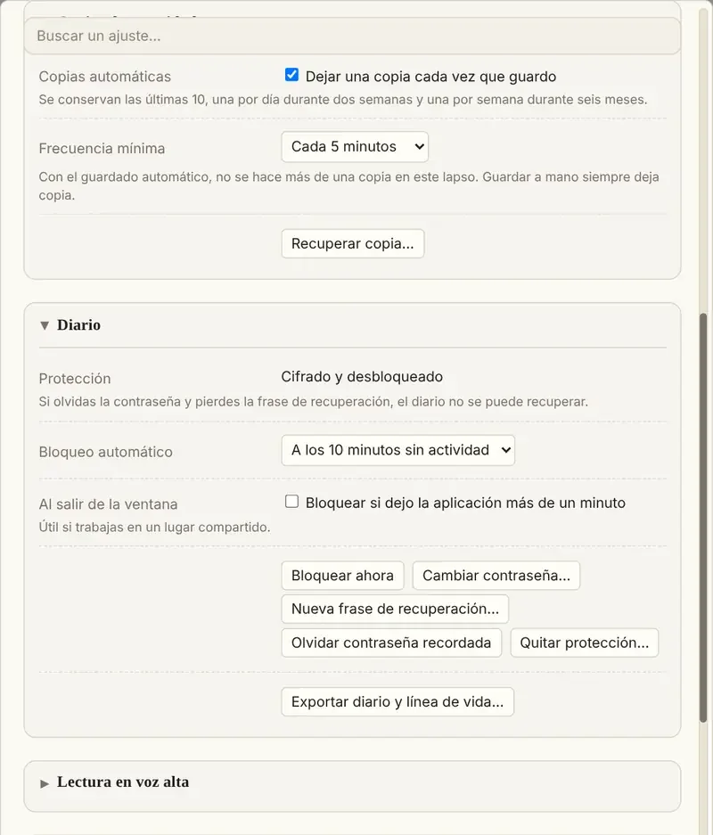

Configuración y estilos visuales
Los ajustes cambian el aspecto y el comportamiento de Domingo.


Cómo se abre
Con el engranaje de arriba a la derecha, o con Ctrl+, (Cmd+, en Mac). Los ajustes se agrupan en pestañas: General, Apariencia, Escritura, Manuscrito y Misi y diario. Se recuerda la última que usaste, y el buscador de arriba revisa todas las pestañas a la vez. Dentro de cada pestaña, los bloques se pliegan al pulsar su título. Los cambios se aplican al momento.
| Bloque | Qué ajustas |
|---|---|
| Archivo y guardado | Al abrir la app: reabrir donde lo dejaste o empezar sin manuscritos; guardado automático; versión diaria. |
| Apariencia | Estilo visual, tema (Claro, Sepia, Oscuro), tipografía, tamaño, interlineado y ancho de la columna. |
| Paneles | Mostrar Estructura, Inspector y los objetivos del pie. |
| Inspector | Qué secciones empiezan abiertas, cerradas u ocultas (con ajustes propios en Modo estudio). |
| Este manuscrito | Numeración de referencias, metas de palabras y si Domingo las pregunta al crear un manuscrito. |
| Máquina de escribir y temporizador | Estilo de la máquina, silenciarla, tiempos de trabajo y descanso. |
| Misi | Apodo, modo travieso, avisos, accesorios y desbloqueos. |
| Capitular | Pone la primera letra del texto grande y a color. Se ve en los estilos Clásico, Imprenta, Acanthus, Bohemio, Aurora, Japandi y Midcentury, en la primera línea de cada texto, siempre que sea un párrafo común (no un título, lista, cita ni tabla). |
| Modo captura | Oculta la barra de estado, el botón flotante, los avisos y las marcas de cambios sin guardar, para sacar capturas limpias. También está en Ir a… (Ctrl+K). |
| Licencia | Solo en la app de escritorio. Muestra el estado de tu licencia, el correo del comprador, el nombre de este equipo y cuántas de tus 2 activaciones usas; permite activar con una clave o liberar este dispositivo. |
| Actualizaciones | Solo en la app de escritorio. Versión instalada, última versión disponible y un botón para buscar y descargar. |
| Otros | Mis mangos, restablecer apariencia y medir el rendimiento. |
Estilos visuales


Domingo puede cambiar de carácter sin cambiar de función. Hay diez estilos, cada uno en versión clara, sepia y oscura, y cambian tipografías, botones, tarjetas del Corcho, notas de los mapas y la línea de tiempo. Se eligen en Vista, Estilo visual, o en Configuración, Apariencia.
- Clásico
- El aspecto de siempre.
- Wabi Sabi
- Papel de ceniza y arcilla, bordes irregulares y un pequeño sello rojo. Lo imperfecto y lo callado.
- Japandi
- Madera clara y verde salvia, letras espaciadas, mucho aire.
- Mid-Century
- Mostaza, teal y naranja quemado, sombras planas y tachuelas.
- Boceto conceptual
- Hoja cuadriculada, grafito y lápiz rojo; trazos a mano y cinta adhesiva.
- Bohemio
- Ciruela, terracota y arena, botones de píldora y franja estampada.
- Imprenta
- Papel crema, filetes dobles y un archivador verde con latón.
- Acanthus
- Verde profundo, vino y oro; hojas y esquinas de hoja.
- Aurora
- Degradados verde azulado, violeta y menta con cristal suave.
- Bauhaus
- Rojo, amarillo y azul, negro, formas geométricas y minúsculas.
Clásico y Wabi Sabi están abiertos desde el inicio; los demás se desbloquean con tu avance, igual que los accesorios de Misi. Si prefieres no esperar, elige «Todos desbloqueados desde ya» en Configuración. Tu estilo y tema se recuerdan al cerrar la app.
Rapidez
Con Preparar las vistas al abrir un manuscrito activado, Domingo calcula de antemano Estilo, Presencia, Nombres, Corrección, Glosario y las menciones de las etiquetas. Abrir un manuscrito grande tarda unos segundos más, con un cuadro de avance que puedes omitir, y después esas vistas abren al instante. Si prefieres abrir enseguida, desactívalo, o elige Preparar las vistas «al abrir cada pestaña» para que se calculen solo cuando entres a ellas.
Velocidad de lectura. En Configuración, Escritura, defines las palabras por minuto con que Domingo calcula los tiempos de lectura en Estilo.
De día, Japandi claro; de noche, Wabi Sabi oscuro con una tipografía un punto más grande. Escribir cómodo es escribir más tiempo.
Buscar un ajuste

El cuadro de arriba filtra los ajustes por texto. Escribe, por ejemplo, contraseña o voz y solo quedan las secciones con resultados.
Secciones nuevas

- Copias de seguridad. Activar o apagar las copias, la frecuencia mínima, recuperar una copia y abrir su carpeta.
- Diario. Estado de la protección, tiempo de bloqueo por inactividad, bloquear al salir de la ventana, bloquear ahora, cambiar la contraseña, generar otra frase de recuperación y quitar la protección.
- Lectura en voz alta. Voz, velocidad y un botón para probarla.
- Libro y compilación. Plantilla de novela, ensayo o cuento, Ajustes del libro y Compilar y exportar.
- Nombres y revisión. Volver a mostrar las sugerencias que ignoraste.
- Editor y accesibilidad. Subrayado ortográfico del sistema y reducir animaciones.
Llevar tus ajustes a otro equipo
En Otros, Exportar ajustes guarda un archivo con tu apariencia y tus preferencias. Importar ajustes los carga en otra instalación.
Licencia: activar y liberar un equipo
Domingo se compra una sola vez y la licencia sirve en hasta 2 equipos. Sin licencia activa, Domingo queda en solo lectura: puedes abrir y exportar tus manuscritos, y escribir en cuanto actives la licencia.
- Abre Configuración, bloque Licencia, y pulsa Activar con una clave. Si ves el aviso «Solo lectura» en la esquina inferior izquierda, también abre esa pantalla con un clic.
- Pega la clave que recibiste por correo al comprar y pulsa Activar. Hace falta conexión a internet solo en este paso.
- Listo: el bloque Licencia muestra el correo del comprador, el nombre de este equipo y cuántas activaciones usas.
Domingo vuelve a verificar tu licencia en segundo plano cada vez que abres la app. Sin internet sigues escribiendo hasta 30 días desde la última verificación; pasado ese plazo te pide conectarte una vez.
Para cambiar de computadora, abre Configuración, Licencia, en el equipo que ya no usarás y pulsa Liberar este dispositivo. Confirma, y la activación queda libre para el equipo nuevo. Si llegas al límite de 2 equipos y no puedes liberar uno, escribe a contacto@domingo-app.com.mx.
- Clave no válida
- Revisa que esté completa, sin espacios ni saltos de línea.
- Clave de otro producto
- La clave pertenece a una compra distinta de Domingo.
- Límite de 2 equipos
- Libera uno desde Configuración en el otro equipo, o escribe a soporte.
- Sin conexión
- Conéctate a internet e intenta de nuevo.
Actualizaciones
La app de escritorio revisa en segundo plano si hay una versión nueva y, cuando la hay, te lo avisa con un mensaje y un botón Descargar que abre la página de descargas. Instalas la versión nueva sobre la anterior: tus manuscritos y tu licencia siguen como estaban. En Configuración, Actualizaciones, ves la versión instalada y puedes pulsar Buscar actualizaciones.